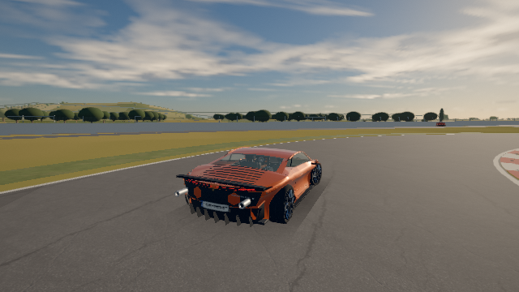
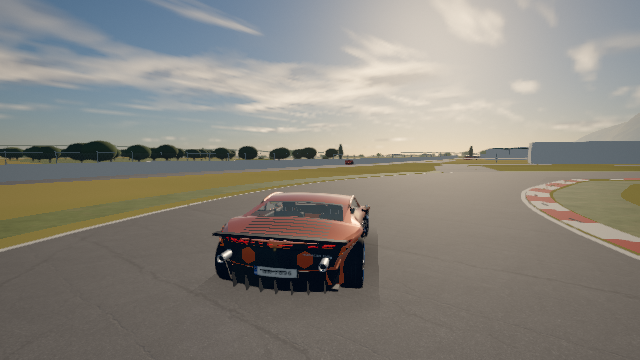
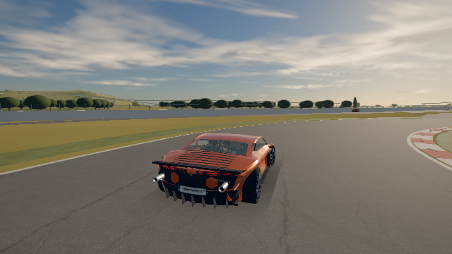
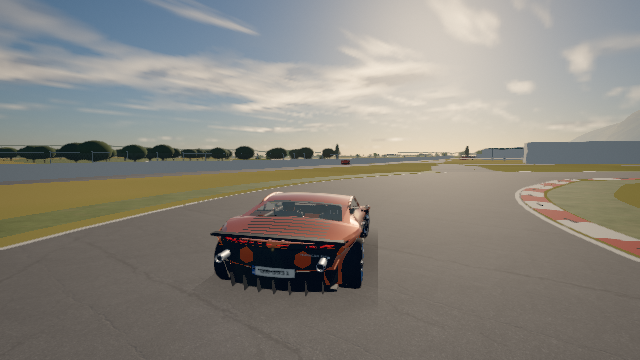

Sharper assisted steering, with the existing tyres and drift. The guard now follows both front contact velocities and stays active during same-yaw understeer. Six cars receive a small, tunable partial-input response boost.
| Car | Front scrub frames before → after¹ | Understeer deg/g | Lateral g after 60 / 100 / 150 km/h |
|---|---|---|---|
| Huracán · AWD | 694 → 0 | 2.16 → 2.18 | 1.16 / 1.20 / 1.23 |
| 911 · RR/RWD | 549 → 0 | 1.00 → 1.01 | 1.11 / 1.11 / 1.10 |
| E36 M3 · RWD | 538 → 0 | 2.44 → 2.47 | 0.99 / 1.00 / 1.02 |
| Golf GTI · FWD | 602 → 0 | 2.74 → 2.78 | 0.99 / 1.00 / 1.01 |
| MINI · FWD | 605 → 0 | 2.72 → 2.72 | 0.95 / 0.96 / 0.98 |
| Superb · AWD | 696 → 0 | 2.70 → 2.71 | 0.97 / 0.98 / 0.99 |
¹ Any front wheel beyond 1.15× peak slip, across six Megara sections and both input styles (1,080 frames per car). Exact peak crossings and raw traces remain in the evidence.
| Huracán · real Ground | Lap before → after | Wall frames | Off-road frames |
|---|---|---|---|
| keyboard | 75.650 → 75.767 s | 0 → 0 | 0 → 0 |
| gamepad | 75.133 → 75.033 s | 0 → 0 | 0 → 0 |
Lap pace is essentially unchanged. Handbrake and power-over drifts still hold for more than seven seconds. The older feint-hold search retains its baseline failure, disclosed in the research note.




Actual browser chase-camera frames, 60 km/h turn-in; canvas capture omits the DOM HUD. Full four-frame strips, all six-car measurements, research sources and gate logs are in .scratch/handling/ and tools/handling-notes.md.